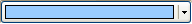

Style/Display Actions:
Button
The color selector appears as a button.

Combo Box
The color selector appears as a combo box.
Set Tracking Selection On/Off
When this option is on, the selection will be changed to whatever color the mouse is over while the color popup is still open. Normally, the selection will only change once the color popup closes.
Fill Combo Box With Color
Instead of text and a small color square, a large color rectangle is shown in the Combo Box.
Have Combo Box Show Color and Text
Text and a small color square are shown in the Combo Box.
Set Combo Box Text Format if Name Can/Cannot Be Found
These actions set the string the combo box displays. It checks if a name can be found for the color in the list of color names. You can use the following string patterns which will be replaced with what the equal: %n (color name), %r (red value), %g (green value), %b (blue value), and %h (hex value of color). The default format if the name can be found is simply "%n" and if the name can't be found "RGB: %r, %g, %b"
Set Font
Sets the font name and size the Combo Box uses.